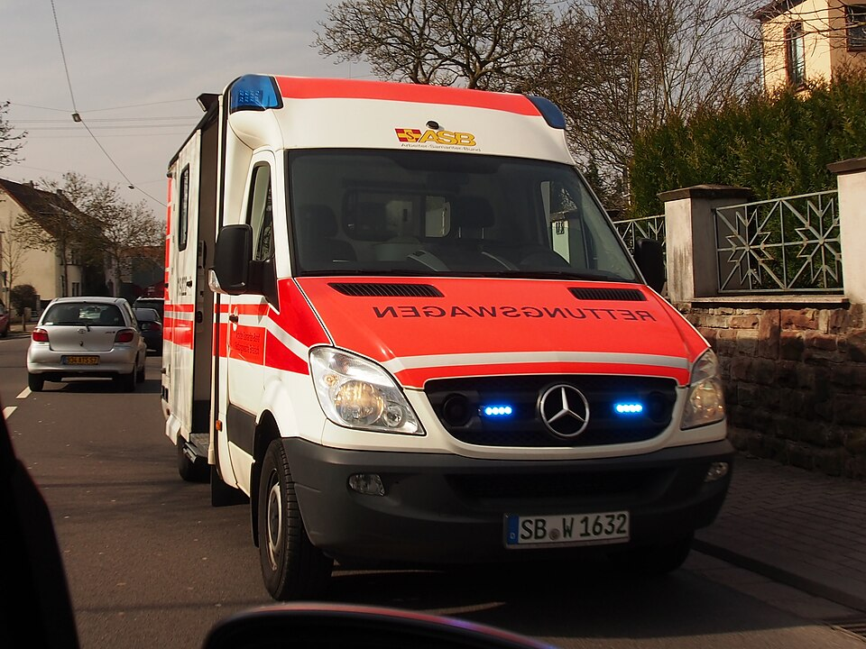

Einheiten-Erfassungsbogen für den Katastrophenschutz Saarland
Das Saarland regelt den Katastrophenschutz anders als die meisten anderen Länder: Die Katastrophenschutz-Organisationsverordnung (KatOrgVO) legt Fachdienste und Zuständigkeiten fest, überlässt Stärke, Gliederung und Ausstattung der Einheiten aber ausdrücklich "gesonderten Konzeptionen" — es gibt keine landesweite Stärke- und Ausrüstungsnachweisung wie in anderen Bundesländern. Dieses kostenlose Online-Tool bringt trotzdem fertige Beispielbögen mit, abgeleitet aus den real dokumentierten Konzeptionen des DRK-Landesverbandes Saarland für den Sanitäts- und Betreuungsdienst.

13 Beispielbögen aus den DRK-Konzeptionen
Statt einer Landesverordnung stehen die vom Landesausschuss der Bereitschaften beschlossenen, landesweit einheitlichen Konzeptionen des DRK im Saarland Pate:
- Sanitätsdienst — Sanitätsstaffel (BHP 5), Behandlungsplatz 10 (BHP 10), Behandlungsplatz 25 (BHP 25) mit Transportkomponente sowie die vier Patiententransportkomponenten (PT-G 5, PT-GA 5, PT-Z 10, PT-ZA 10) — mit Stärke- und teils Fahrzeugangaben, wie sie das DRK Landesverband Saarland e.V. öffentlich dokumentiert.
- Betreuungsdienst — Betreuer vor Ort, Betreuungsstaffel, Betreuungsgruppe, Betreuungsplatz 200 und 500 (BTP 200/500) sowie eine kombinierte DRK-Einsatzeinheit, dokumentiert in den „Mindestanforderungen an Strukturen des DRK-Betreuungsdienstes im Landesverband Saarland e.V.".
Stärke und, wo die Quelle sie nennt, auch die Fahrzeugliste sind je Einheit aus diesen Quellen übernommen und beim Erzeugen der Bögen dagegen geprüft. Bei sieben der 13 Bögen (BHP 25 sowie den vier Patiententransportkomponenten) sind Fahrzeugtyp und -zahl wörtlich der Quelle entnommen; bei den übrigen nennt die DRK-Konzeption keine Fahrzeuge — dort sind die Typen plausibel nach den generischen Ausstattungslisten der KatOrgVO (§ 6/§ 7) belegt, im Feld „Sonstiges" jedes Bogens vermerkt.
Warum keine Landesverordnung wie in anderen Ländern
Anders als z. B. Berlin (KatSD-VO) oder Baden-Württemberg (VwV KatSD) enthält die saarländische KatOrgVO selbst keine einzige Stärke- oder Fahrzeugzahl — sie verweist in § 2 Abs. 1 ausdrücklich auf "gesonderte Konzeptionen" der obersten Katastrophenschutzbehörde. Statt Zahlen zu erfinden, greift diese Vorlage auf die real dokumentierten DRK-Konzeptionen für Sanitäts- und Betreuungsdienst zurück, die genau diese Lücke füllen und landesweit für alle sieben DRK-Kreisverbände gelten.
Funkrufnamen amtlich nach saarländischer Vorschrift
Die Funkrufnamen folgen der „Verwaltungsvorschrift über Funkrufnamen für nichtpolizeiliche Behörden und Organisationen mit Sicherheitsaufgaben (npolBOS) im Saarland" vom 24.02.2014: Kennwort „ROTKREUZ", Einsatzbereich im Klartext, Standort- und Fahrzeugkennzahl sowie laufende Nummer — genau wie im Sprechfunk vor Ort.
Kräfteerfassung im Verband
Rücken mehrere Komponenten gemeinsam aus, sammelt die Kreisverbands- oder Verbandsführung die einzelnen Bögen in der App unter einem Einsatz: Die Stärken werden laufend summiert, der Verband meldet geschlossen weiter — als Sammel-PDF, Datei oder QR-Code. Dieselbe Funktion trägt den Meldekopf am Bereitstellungsraum.
Gemacht für den Ausfall der Infrastruktur
Katastrophenschutz heißt: Es ist mit dem Ausfall von Strom, Mobilfunk und Internet zu rechnen. Die App arbeitet nach dem ersten Aufruf vollständig offline, speichert ausschließlich lokal auf dem Gerät und übergibt Bögen per QR-Code von Bildschirm zu Kamera — ohne Server, ohne Kopplung, ohne Netz.
Häufige Fragen zum Katastrophenschutz Saarland
Warum sind es nur 13 Bögen, viel weniger als in anderen Ländern?
Weil das Saarland — anders als z. B. Berlin, Thüringen oder Baden-Württemberg — keine landesweite Verordnung mit Teileinheiten-Gliederung kennt. Die 13 Bögen bilden die real dokumentierten Konzeptionen des DRK Landesverbandes Saarland für Sanitäts- und Betreuungsdienst ab, mehr Struktur ist auf Landesebene nicht öffentlich belegt.
Sind die Vorlagen amtlich?
Nein — die Stärke- und Fahrzeugangaben stammen aus öffentlich zugänglichen, vom Landesausschuss der Bereitschaften des DRK Saarland beschlossenen Konzeptionen, sind aber kein amtliches Dokument und keine Landesverordnung. Nur die Funkrufnamen-Systematik selbst ist amtlich (Verwaltungsvorschrift des Ministeriums für Inneres und Sport). Maßgeblich bleiben die Vorgaben der zuständigen Katastrophenschutz- behörden; deshalb kannst du jede Vorbelegung frei anpassen.
Warum sind bei manchen Bögen keine Fahrzeuge quellenbelegt?
Die DRK-Konzeptionen für Sanitätsstaffel, BHP 10, Betreuungsstaffel/ -gruppe, BTP 200/500 und die DRK-Einsatzeinheit nennen zwar die Personalstärke, aber keine Fahrzeuge. Nur bei BHP 25 und den vier Patiententransportkomponenten sind Fahrzeugtyp und -zahl wörtlich belegt. Bei den übrigen Bögen sind die Fahrzeugtypen plausibel nach den generischen Ausstattungslisten der KatOrgVO gewählt — im Feld „Sonstiges" jedes Bogens klar gekennzeichnet.
Was ist mit anderen Bundesländern?
Weitere Landesvorlagen liegen für Niedersachsen, Sachsen, Brandenburg, Thüringen, Baden-Württemberg, Rheinland-Pfalz, Mecklenburg-Vorpommern, Hessen, Bayern und Berlin bereit — eine Übersicht gibt die Seite Katastrophenschutz der Länder. Fehlt deins, kannst du jeden Bogen frei ausfüllen und selbst als Vorlage speichern.